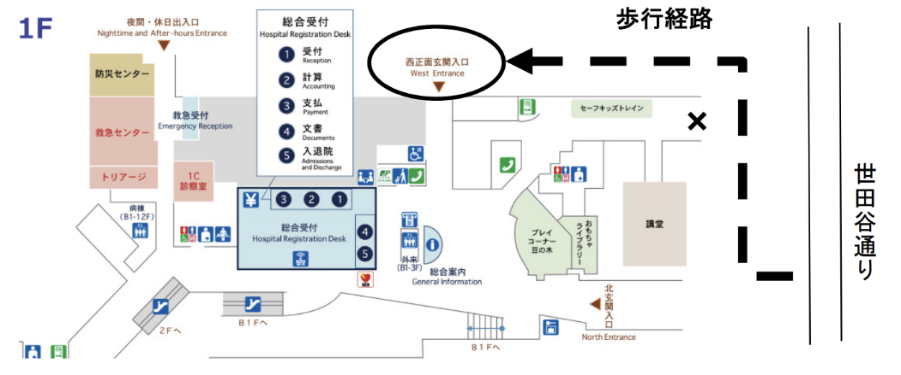

会長挨拶
この度、第14回日本結節性硬化症学会学術総会の会長を拝命いたしました。2026年11月22日、東京都世田谷区の国立成育医療研究センター講堂を会場として、第14回学術総会を開催いたします。本学会では、医療従事者のみならず患者さんやご家族の皆様とともに、結節性硬化症の診療・研究の発展に取り組んでいます。結節性硬化症は全身の多くの臓器に腫瘍を形成し、患者さんの一生にわたって治療とサポートが必要となる遺伝性疾患です。近年は遺伝子変異に基づく薬物療法の進歩により予後が大きく改善していますが、多くの課題が残されています。
今回の学術総会では、最新の研究成果や臨床経験を共有し、未来に向けた課題への取り組みについて議論する場として企画しました。また、患者さんとご家族を対象とした「TSCつばさの会」も同時開催いたします。ハイブリッド形式（現地開催＋オンライン併用）で実施いたしますが、ぜひ会場にお越しいただき、直接交流を深めていただければ幸いです。
第14回日本結節性硬化症学会学術総会 会長 阿部 裕一
開催概要
- 名称
- 第14回結節性硬化症学会学術集会
- 会期
- 2026年11月22日（日）
- 開催形式
- 現地開催およびオンライン配信のハイブリッド形式
※演者の方は来場にてご発表をお願いいたします。 - 会場
-
国立成育医療研究センター 講堂
〒157-8535 東京都世田谷区大蔵2-10-1 - 事務局
-
第14回日本結節性硬化症学会学術総会 運営事務局
Email: jstsc14-office@ncchd.go.jp
アクセス
〒157-8535 東京都世田谷区大蔵2-10-1 国立成育医療研究センター 講堂（運営棟 1 階）
世田谷通りより成育医療研究センターを眺めて右の建物が運営棟・病院の建物になりま
す。病院建物正面左手奥にある北玄関（下図右下）および二子玉川行きのバスロータリ
ーにある職員通用口（×）からは建物に入ることができません。学会当日は世田谷通りよ
り右手の駐車場側を建物に沿ってお進みいただき（点線），西正面玄関入り口（下図上○
で囲まれた部分）より建物内へお入りくださいますようお願い申し上げます。
なお，1 階ロビーおよび地下 1 階の売店区域以外の病棟および診療領域へのお立ち寄り
はご遠慮いただきますようお願い申し上げます。休日時間外の患者様およびご家族の建
物内への立ち入りは時間外入り口（下図左上部）で受付をお願いしています点をご理解く
ださいますようお願い申し上げます。
